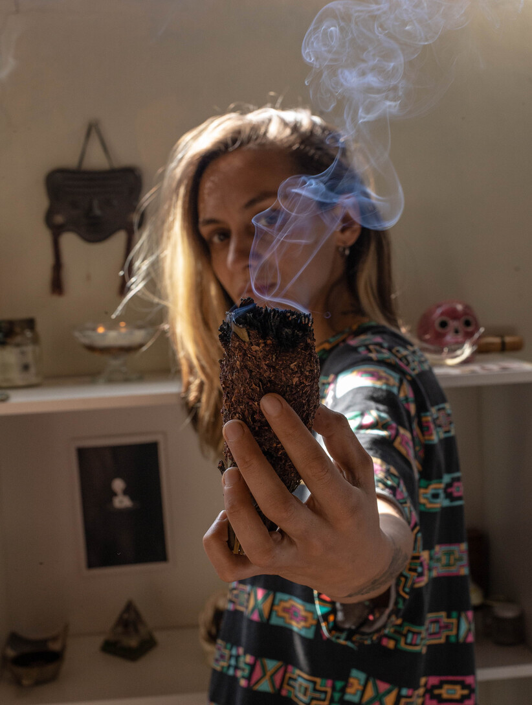

HAMPI YURA
HAMPI YURA
HAMPI YURA
Hampi Yura significa “Planta Medicinal” en Quechua.
Este proyecto nace con la idea de poder devolverle a este mundo una forma sana de reencontrarnos con nuestras memorias ancestrales a través de las plantas medicinales que la Pachamama nos regala.
Una forma de recuperar la salud y la autonomía del cuerpx.
Una manera de conocer, valorar y volver a nuestro equilibrio de cuerpo-mente y espíritu, en comunión con la naturaleza y conexión con nuestra Tierra.
Una forma de acercarse al mundo de las plantas y animarse, con el adecuado asesoramiento, a su consumo responsable.

Una forma de sanar saliendo del sistema que tanto nos intoxica y una alternativa frente a la medicina hegemónica.
Aho
Gracias